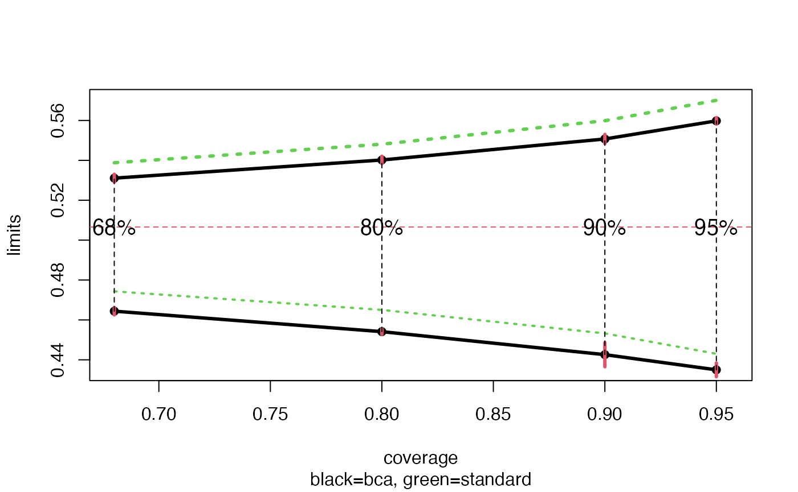
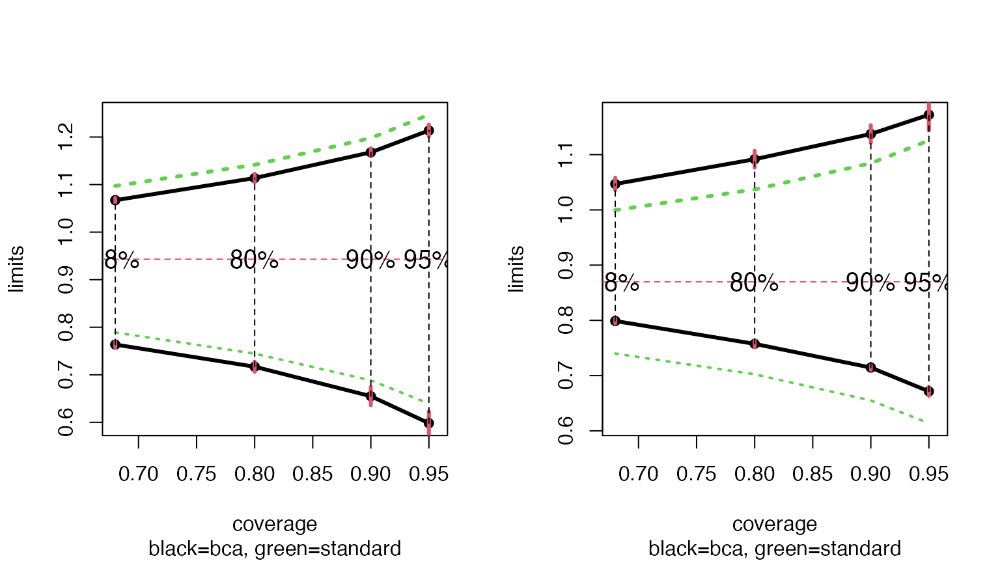
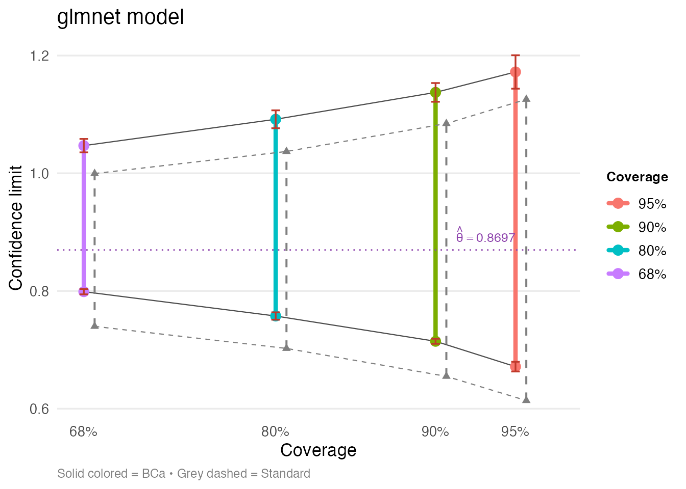
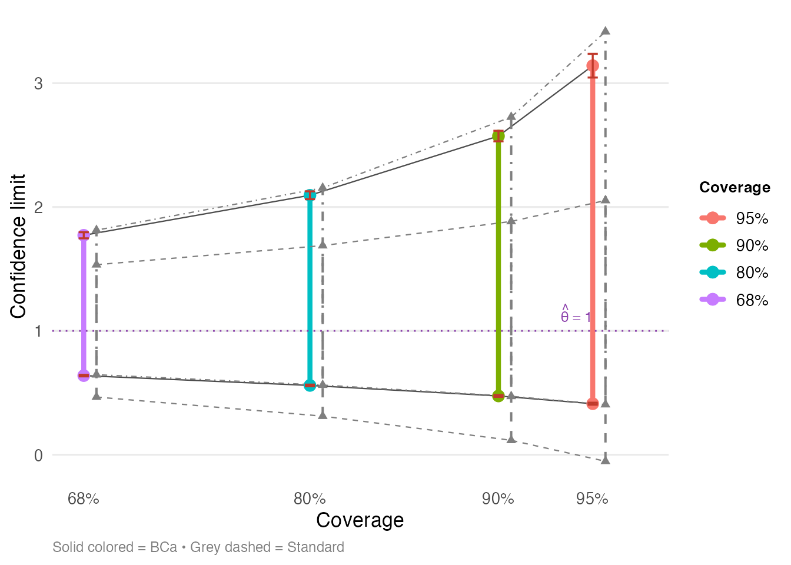

Automatic Construction of Bootstrap Confidence Intervals
Bradley Efron and Balasubramanian Narasimhan
2026-04-07
Source:vignettes/bcaboot.Rmd
bcaboot.RmdIntroduction
Bootstrap confidence intervals depend on three elements:
- the cdf of the bootstrap replications ,
- the bias-correction number where is the original estimate
- the acceleration number that measures the rate of change in as , the data changes.
The first two of these depend only on the bootstrap distribution, and not how it is generated: parametrically or non-parametrically.
Package bcaboot aims to make construction of bootstrap
confidence intervals almost automatic. The two main functions
are:
-
bca_nonpar()for nonparametric bootstrap -
bca_par()for parametric bootstrap
All results are returned as bcaboot objects with a
consistent structure and support tidy(),
glance(), and autoplot() for integration with
the tidyverse ecosystem.
Further details are in the Efron and Narasimhan (2018) paper. Much of the theory behind the approach can be found in references Efron (1987), DiCiccio and Efron (1992), DiCiccio and Efron (1996), and Efron and Hastie (2016).
A Nonparametric Example
Suppose we wish to construct bootstrap confidence intervals for an
-statistic
from a linear regression. Using the diabetes data from the lars
(442 by 11) as an example, we use the function below to regress the
y on x, a matrix of of 10 predictors, to
compute
.
data(diabetes, package = "bcaboot")
Xy <- cbind(diabetes$x, diabetes$y)
rfun <- function(Xy) {
y <- Xy[, 11]
X <- Xy[, 1:10]
summary(lm(y ~ X) )$adj.r.squared
}Constructing bootstrap confidence intervals involves merely calling
bca_nonpar:
set.seed(1234)
result <- bca_nonpar(x = Xy, B = 2000, func = rfun, verbose = FALSE)The result prints a clean summary:
result## conf.level bca.lo bca.hi std.lo std.hi
## 0.95 0.4221740 0.5613841 0.4429423 0.5701783
## 0.90 0.4392968 0.5507219 0.4531704 0.5599503
## 0.80 0.4541906 0.5387434 0.4649627 0.5481579
## 0.68 0.4647324 0.5298461 0.4742814 0.5388392Tidy output
The tidy() method returns a tibble with one row per
(confidence level, method) combination, following the broom
conventions:
tidy(result)## # A tibble: 8 × 7
## conf.level method estimate conf.low conf.high jacksd.low jacksd.high
## <dbl> <chr> <dbl> <dbl> <dbl> <dbl> <dbl>
## 1 0.95 bca 0.507 0.422 0.561 0.00776 0.00201
## 2 0.95 standard 0.507 0.443 0.570 NA NA
## 3 0.9 bca 0.507 0.439 0.551 0.00280 0.00173
## 4 0.9 standard 0.507 0.453 0.560 NA NA
## 5 0.8 bca 0.507 0.454 0.539 0.00262 0.00157
## 6 0.8 standard 0.507 0.465 0.548 NA NA
## 7 0.68 bca 0.507 0.465 0.530 0.00143 0.00158
## 8 0.68 standard 0.507 0.474 0.539 NA NAThe glance() method provides a one-row summary of the
bootstrap run:
glance(result)## # A tibble: 1 × 9
## method accel theta sdboot z0 a sdjack B boot_mean
## <chr> <chr> <dbl> <dbl> <dbl> <dbl> <dbl> <dbl> <dbl>
## 1 nonpar regression 0.507 0.0325 -0.268 -0.00585 0.0323 2000 0.515Visualization
When ggplot2 is available, autoplot()
produces a publication-ready plot of the confidence intervals:

Acceleration methods
The accel argument controls how the acceleration
is estimated:
-
accel = "regression"(default): uses local regression on bootstrap count vectors nearest to uniform. Also computes the gbca diagnostic. -
accel = "jackknife": uses classical delete-one (or delete-group) jackknife influence values.
set.seed(1234)
result_jk <- bca_nonpar(x = Xy, B = 2000, func = rfun,
accel = "jackknife", verbose = FALSE)
tidy(result_jk)## # A tibble: 8 × 7
## conf.level method estimate conf.low conf.high jacksd.low jacksd.high
## <dbl> <chr> <dbl> <dbl> <dbl> <dbl> <dbl>
## 1 0.95 bca 0.507 0.435 0.560 0.00412 0.00155
## 2 0.95 standard 0.507 0.443 0.570 NA NA
## 3 0.9 bca 0.507 0.443 0.551 0.00497 0.00224
## 4 0.9 standard 0.507 0.453 0.560 NA NA
## 5 0.8 bca 0.507 0.454 0.540 0.00127 0.00158
## 6 0.8 standard 0.507 0.465 0.548 NA NA
## 7 0.68 bca 0.507 0.464 0.531 0.00186 0.00177
## 8 0.68 standard 0.507 0.474 0.539 NA NAA Parametric Example
A logistic regression was fit to data on 812 neonates at a large clinic. Here is a summary of the dataset.
str(neonates)## 'data.frame': 812 obs. of 12 variables:
## $ gest: num -0.729 -0.729 1.156 -2.884 0.348 ...
## $ ap : num 0.856 0.856 0.856 -2.076 0.856 ...
## $ bwei: num -0.694 -0.694 0.786 -2.174 0.786 ...
## $ gen : num 1.227 -0.814 -0.814 1.227 -0.814 ...
## $ resp: num 0.78 -0.939 1.639 1.639 1.639 ...
## $ head: num -0.402 -0.402 -0.402 -0.402 -0.402 ...
## $ hr : num -0.256 -0.256 -0.256 -0.256 -0.256 ...
## $ cpap: num 1.866 -0.535 1.866 1.866 1.866 ...
## $ age : num -0.94 -0.94 -0.94 -0.94 1.06 ...
## $ temp: num -0.669 -0.669 -0.669 -0.669 2.339 ...
## $ size: num 0.484 -1.319 -1.319 0.484 0.484 ...
## $ y : int 1 1 1 1 1 1 1 1 1 1 ...The goal was to predict death versus
survival—
is 1 or 0, respectively—on the basis of 11 baseline variables of which
one of them resp was of particular concern. (There were 207
deaths and 605 survivors.) So here
,
the parameter of interest is the coefficient of resp.
Discussions with the investigator suggested a weighting of 4 to 1 of
deaths versus non-deaths.
A Logistic Model
weights <- with(neonates, ifelse(y == 0, 1, 4))
glm_model <- glm(formula = y ~ ., family = "binomial", weights = weights, data = neonates)
summary(glm_model)##
## Call:
## glm(formula = y ~ ., family = "binomial", data = neonates, weights = weights)
##
## Coefficients:
## Estimate Std. Error z value Pr(>|z|)
## (Intercept) -0.26510 0.07598 -3.489 0.000485 ***
## gest -0.70602 0.13117 -5.383 7.35e-08 ***
## ap -0.78594 0.07874 -9.982 < 2e-16 ***
## bwei -0.23332 0.12592 -1.853 0.063879 .
## gen -0.04107 0.07355 -0.558 0.576594
## resp 0.94306 0.08974 10.509 < 2e-16 ***
## head 0.04813 0.08057 0.597 0.550299
## hr 0.03504 0.07191 0.487 0.626045
## cpap 0.43438 0.08869 4.898 9.70e-07 ***
## age 0.15727 0.08492 1.852 0.064041 .
## temp -0.05960 0.08506 -0.701 0.483520
## size -0.37477 0.09919 -3.778 0.000158 ***
## ---
## Signif. codes: 0 '***' 0.001 '**' 0.01 '*' 0.05 '.' 0.1 ' ' 1
##
## (Dispersion parameter for binomial family taken to be 1)
##
## Null deviance: 1951.7 on 811 degrees of freedom
## Residual deviance: 1187.2 on 800 degrees of freedom
## AIC: 1211.2
##
## Number of Fisher Scoring iterations: 5Parametric bootstrapping in this context requires us to independently
sample the response according to the estimated probabilities from
regression model. As discussed in the paper accompanying this software,
routine bca_par also requires sufficient statistics
where
is the model matrix. Therefore, it makes sense to have a function do the
work. The function glm_boot below returns a list of the
estimate
,
the bootstrap estimates, and the sufficient statistics.
glm_boot <- function(B, glm_model, weights, var = "resp") {
pi_hat <- glm_model$fitted.values
n <- length(pi_hat)
y_star <- sapply(seq_len(B), function(i) ifelse(runif(n) <= pi_hat, 1, 0))
beta_star <- apply(y_star, 2, function(y) {
boot_data <- glm_model$data
boot_data$y <- y
coef(glm(formula = y ~ ., data = boot_data, weights = weights, family = "binomial"))
})
list(theta = coef(glm_model)[var],
theta_star = beta_star[var, ],
suff_stat = t(y_star) %*% model.matrix(glm_model))
}Now we can compute the bootstrap estimates using
bca_par.
set.seed(3891)
glm_boot_out <- glm_boot(B = 2000, glm_model = glm_model, weights = weights)
glm_bca <- bca_par(t0 = glm_boot_out$theta,
tt = glm_boot_out$theta_star,
bb = glm_boot_out$suff_stat)We can examine the results using tidy methods:
glm_bca## conf.level bca.lo bca.hi std.lo std.hi
## 0.95 0.5981733 1.213676 0.6394385 1.246691
## 0.90 0.6549470 1.167789 0.6882535 1.197876
## 0.80 0.7169529 1.113660 0.7445341 1.141595
## 0.68 0.7635391 1.067160 0.7890090 1.097120
tidy(glm_bca)## # A tibble: 8 × 7
## conf.level method estimate conf.low conf.high jacksd.low jacksd.high
## <dbl> <chr> <dbl> <dbl> <dbl> <dbl> <dbl>
## 1 0.95 bca 0.943 0.598 1.21 0.0247 0.0125
## 2 0.95 standard 0.943 0.639 1.25 NA NA
## 3 0.9 bca 0.943 0.655 1.17 0.0193 0.00848
## 4 0.9 standard 0.943 0.688 1.20 NA NA
## 5 0.8 bca 0.943 0.717 1.11 0.0107 0.00907
## 6 0.8 standard 0.943 0.745 1.14 NA NA
## 7 0.68 bca 0.943 0.764 1.07 0.00676 0.00507
## 8 0.68 standard 0.943 0.789 1.10 NA NAOur bootstrap standard error using
samples for resp can be read off from the glance
output:
glance(glm_bca)## # A tibble: 1 × 9
## method accel theta sdboot z0 a sdjack B boot_mean
## <chr> <chr> <dbl> <dbl> <dbl> <dbl> <dbl> <dbl> <dbl>
## 1 par NA 0.943 0.155 -0.215 -0.0194 NA 2000 0.982A Penalized Logistic Model
Now suppose we wish to use a nonstandard estimation procedure, for
example, via the glmnet package, which uses
cross-validation to figure out a best fit, corresponding to a
penalization parameter
(named lambda.min).
X <- as.matrix(neonates[, seq_len(11)]) ; Y <- neonates$y;
glmnet_model <- glmnet::cv.glmnet(x = X, y = Y, family = "binomial", weights = weights)We can examine the estimates at the lambda.min as
follows.
coefs <- as.matrix(coef(glmnet_model, s = glmnet_model$lambda.min))
knitr::kable(data.frame(variable = rownames(coefs), coefficient = coefs[, 1]), row.names = FALSE, digits = 3)| variable | coefficient |
|---|---|
| (Intercept) | -0.212 |
| gest | -0.540 |
| ap | -0.687 |
| bwei | -0.268 |
| gen | 0.000 |
| resp | 0.870 |
| head | 0.000 |
| hr | 0.000 |
| cpap | 0.382 |
| age | 0.050 |
| temp | 0.000 |
| size | -0.221 |
Following the lines above, we create a helper function to perform the bootstrap.
glmnet_boot <- function(B, X, y, glmnet_model, weights, var = "resp") {
lambda <- glmnet_model$lambda.min
theta <- as.matrix(coef(glmnet_model, s = lambda))
pi_hat <- predict(glmnet_model, newx = X, s = "lambda.min", type = "response")
n <- length(pi_hat)
y_star <- sapply(seq_len(B), function(i) ifelse(runif(n) <= pi_hat, 1, 0))
beta_star <- apply(y_star, 2,
function(y) {
as.matrix(coef(glmnet::glmnet(x = X, y = y, lambda = lambda, weights = weights, family = "binomial")))
})
rownames(beta_star) <- rownames(theta)
list(theta = theta[var, ],
theta_star = beta_star[var, ],
suff_stat = t(y_star) %*% X)
}And off we go.
glmnet_boot_out <- glmnet_boot(B = 2000, X, y, glmnet_model, weights)
glmnet_bca <- bca_par(t0 = glmnet_boot_out$theta,
tt = glmnet_boot_out$theta_star,
bb = glmnet_boot_out$suff_stat)We can compare both models side-by-side:


Ratio of Independent Variance Estimates
Assume we have two independent estimates of variance from normal theory:
and
Suppose now that our parameter of interest is
for which we wish to compute confidence limits. In this setting, theory yields exact limits:
We can apply bca_par to this problem. As before, here
are our helper functions.
ratio_boot <- function(B, v1, v2) {
s1 <- sqrt(v1) * rchisq(n = B, df = n1) / n1
s2 <- sqrt(v2) * rchisq(n = B, df = n2) / n2
theta_star <- s1 / s2
beta_star <- cbind(s1, s2)
list(theta = v1 / v2,
theta_star = theta_star,
suff_stat = beta_star)
}
funcF <- function(beta) {
beta[1] / beta[2]
}Note that we have an additional function funcF which
corresponds to
in the paper. This is the function expressing the parameter of interest
as a function of the sample.
B <- 16000; n1 <- 10; n2 <- 42
ratio_boot_out <- ratio_boot(B, 1, 1)
ratio_bca <- bca_par(t0 = ratio_boot_out$theta,
tt = ratio_boot_out$theta_star,
bb = ratio_boot_out$suff_stat, func = funcF)The tidy output shows the BCa, standard, and ABC limits:
tidy(ratio_bca)## # A tibble: 12 × 7
## conf.level method estimate conf.low conf.high jacksd.low jacksd.high
## <dbl> <chr> <dbl> <dbl> <dbl> <dbl> <dbl>
## 1 0.95 abc 1 0.405 3.42 NA NA
## 2 0.95 bca 1 0.412 3.14 0.00824 0.0957
## 3 0.95 standard 1 -0.0527 2.05 NA NA
## 4 0.9 abc 1 0.472 2.73 NA NA
## 5 0.9 bca 1 0.475 2.57 0.00743 0.0426
## 6 0.9 standard 1 0.117 1.88 NA NA
## 7 0.8 abc 1 0.562 2.15 NA NA
## 8 0.8 bca 1 0.559 2.09 0.00687 0.0316
## 9 0.8 standard 1 0.312 1.69 NA NA
## 10 0.68 abc 1 0.646 1.81 NA NA
## 11 0.68 bca 1 0.639 1.77 0.00635 0.0247
## 12 0.68 standard 1 0.466 1.53 NA NAWe can compare against exact F-distribution limits:
exact <- 1 / qf(df1 = n1, df2 = n2, p = 1 - as.numeric(rownames(ratio_bca$limits)))
knitr::kable(cbind(ratio_bca$limits, exact = exact), digits = 3)| bca | jacksd | std | pct | exact | |
|---|---|---|---|---|---|
| 0.025 | 0.412 | 0.008 | -0.053 | 0.068 | 0.422 |
| 0.05 | 0.475 | 0.007 | 0.117 | 0.104 | 0.484 |
| 0.1 | 0.559 | 0.007 | 0.312 | 0.164 | 0.570 |
| 0.16 | 0.639 | 0.006 | 0.466 | 0.228 | 0.650 |
| 0.5 | 1.046 | 0.006 | 1.000 | 0.570 | 1.053 |
| 0.84 | 1.772 | 0.025 | 1.534 | 0.903 | 1.800 |
| 0.9 | 2.095 | 0.032 | 1.688 | 0.953 | 2.128 |
| 0.95 | 2.573 | 0.043 | 1.883 | 0.985 | 2.655 |
| 0.975 | 3.141 | 0.096 | 2.053 | 0.996 | 3.247 |
Clearly the BCa limits match the exact values very well and suggests a large upward correction to the standard limits.
autoplot(ratio_bca)
Migration from pre-1.0 API
Version 1.0 introduces a new API. The old functions continue to work but emit deprecation warnings. Here is how to migrate:
Function mapping
| Old function | New function | Notes |
|---|---|---|
bcajack(x, B, func) |
bca_nonpar(x, B, func, accel = "jackknife") |
Classical jackknife acceleration |
bcajack2(x, B, func) |
bca_nonpar(x, B, func, accel = "regression") |
Regression acceleration (default) |
bcanon(B, x, func) |
bca_nonpar(x, B, func) |
Removed; note argument order change |
bcapar(t0, tt, bb) |
bca_par(t0, tt, bb) |
|
bcaplot(result) |
autoplot(result) |
Requires ggplot2 |
Parameter mapping
| Old | New | Description |
|---|---|---|
alpha |
conf.level |
E.g., alpha = 0.025 becomes
conf.level = 0.95
|
m |
n_groups |
Number of jackknife groups |
mr |
group_reps |
Random grouping repetitions |
pct |
kl_fraction |
Fraction of nearby count vectors |
K |
n_jack |
Delete-d jackknife repetitions |
J |
jack_groups |
Groups per jackknife fold |
trun |
truncation |
Truncation for acceleration |
cd |
conf_density |
Confidence density flag |
B (as list) |
boot_data |
Pre-computed bootstrap data |
Return structure
The new objects use $limits (not $lims),
$B_mean (not $B.mean), and $stats
is always a 2-row matrix (never a named vector). Use tidy()
and glance() instead of accessing list components
directly:
## Old way
result$lims[, "bca"]
result$stats["theta"]
## New way
tidy(result) # tibble of confidence limits
glance(result) # tibble of summary statistics